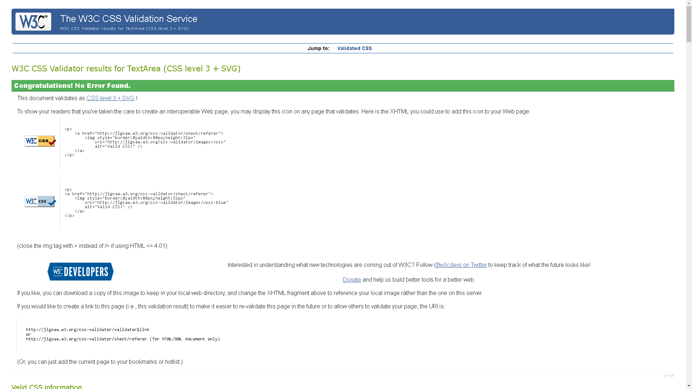
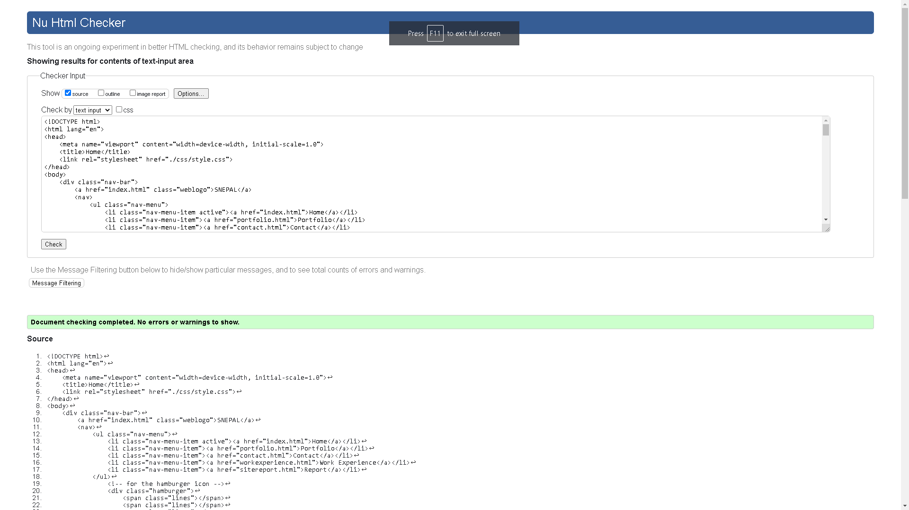
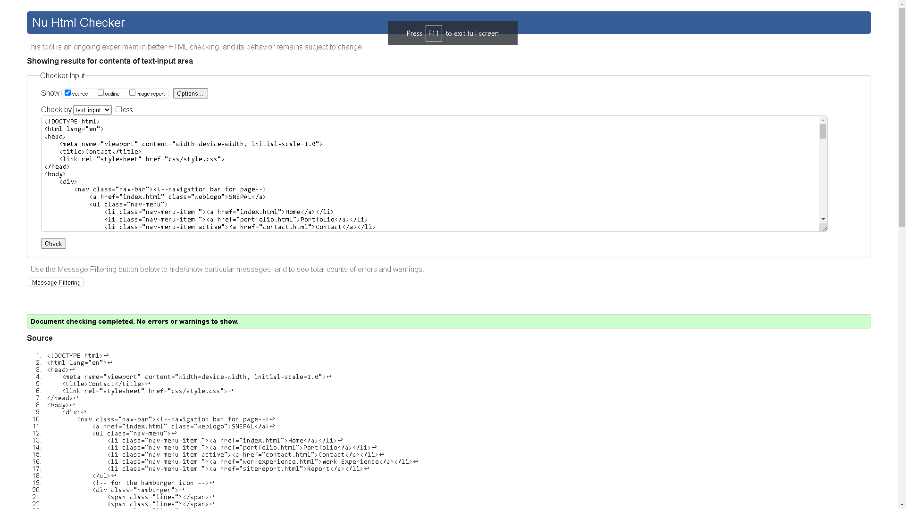
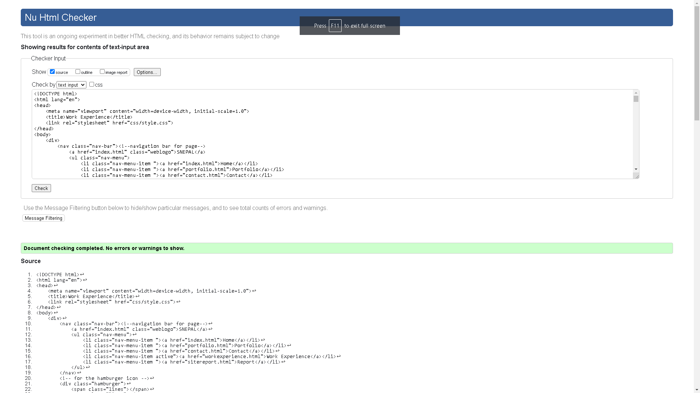
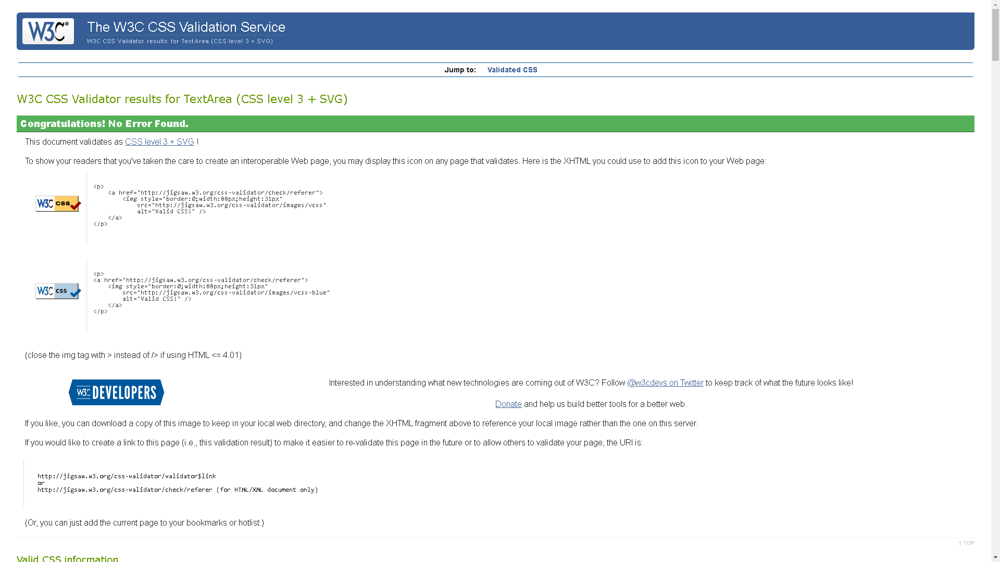

Style.css
Learning HTML and CSS for web development can be difficult but also very rewarding. Initially, you might realize that these languages' syntax and structure are very dissimilar from what you're used to. Nevertheless, as you advance in your studies, you'll start to understand how everything works together and how your code may produce stunning and useful websites.
You must have access to a text editor and a web browser in order to begin learning. The most individuals start by learning HTML because it gives websites their structure. The page's basic structure, including its headings, paragraphs, graphics, and links, is made using HTML.
Additionally, the page is styled with CSS, which affects the fonts, colors, and layouts. Once you've learned HTML, you can begin combining CSS to give your website a more clean and aesthetic.
A high-level programming language frequently used for front-end web development is JavaScript. By modifying the Document Object Model (DOM) and responding to user events, it enables developers to construct interactive and dynamic web pages.
Debugging is a key component of web development, as you'll soon learn as you start creating your first website. Debugging involves finding and correcting code flaws. You can run into issues like missing tags, grammar errors, or incorrect file locations. Debugging should be approached accurately to enable quick problem detection and resolution.
You might develop and use your creativity to the greatest potential through web development. It is also very adaptable because all you need to create a completely functional website these days is a text editor and a web browser, both of which are widely available. In the beginning, you might also find HTML and CSS to be a little difficult to learn and use. Nonetheless, all that effort spent studying HTML and CSS will pay off in the form of very useful skills.
In general, learning HTML and CSS coding, design, and debugging for websites may be a fun experience. You'll be able to create stunning and useful websites that are enjoyable to use with practice, time, and patience.
Module CSY1018, Web Development provided this assignment to test our abilities to create a web page (portfolio with at least 5 pages) using HTML and CSS and also manage our codes using Git/GitHub. Our modulator, Mr. Chirag Thapa, a very charming and a very excellent teacher, guided us throughout the basics of HTML and CSS coding. Mr. Thapa also taught us to use VSCode( Visual Studio Code) and Git/Github to help manage our code.
I went with blue as my major color because it exudes a sense of calm and trust, and I went with red for contrast since it conveys feelings of love and anger when placed next to blue. I found the idea of combining calm, trust, love, and anger to be quite intriguing. I choose to apply an animation to make the "SNEPAL" home logo very attractive and attention-grabbing for viewers. As a result, the logo will continuously change colors. To make it simple for the viewer to navigate between pages, the website includes a Navigation Bar and Footer. Moreover, I've included social and web pages links in the footer so that after reading they do not need to go back to the top of the web page to navigate pages.
As our modulator Mr. Thapa once told us that sans-serif fonts are the most aesthetically pleasing fonts, I've chosen to add sans-serif to practically all of the fonts. Subject Headers are bold and larger than most of the text because they draw attention to themselves and compel the viewer to read them.
This website also has a mobile version. A hamburger icon appears at the top of the website in place of the Navigation Bar. The navigation bar may be opened and closed using the hamburger menu, and for this particular section, I've utilized JavaScript to do so. You don't need to worry about your screen resolution because it is also responsive.
The visitor can come to know more about Shuvasis Nepal on the website. His abilities in the workplace, his interests, and his accomplishments. It also enables the viewer to get in touch with him and communicate with him.
Finally, this module has improved my creative and learning capabilities. The journey so far has been really amazing, especially with a modulator like Mr. Thapa. Additionally, CSY1018 has sparked my interest in web development and encouraged me to learn more about it. Classes with Mr. Thapa sound both important and like a lot of fun. In my opinion, there is still much that I need to study in order to achieve my full potential and that this is only the beginning of my web journey.
Index.html
Portfolio.html
Contact.html
WorkExperience.html
Style.css
